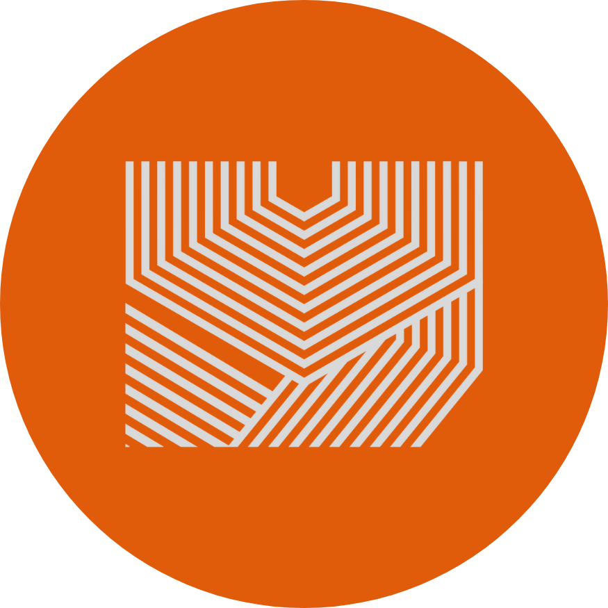
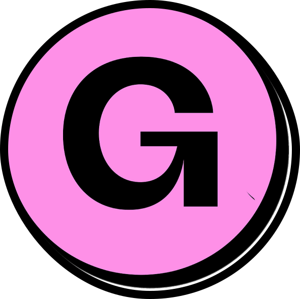

Yavanika
- Heylo! I'm a designer & data analyst -
P O R T F O L I O
Behance
GitHub
LinkedIn
Medium Blog
S U P P L I E S
Buy Me A Coffee
Gumroad
 Yavanika
Yavanika
Yavanika
Yavanika
Yavanika
Yavanika